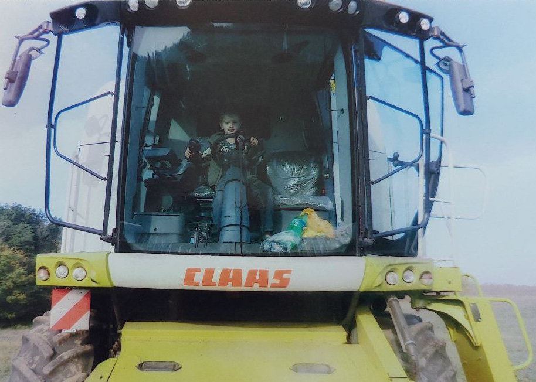

Сьогодні я вітаю тебе із нашим спільним святом: з днем, коли ти
, і днем, коли я стала
найщасливішою
на Землі.
Для всіх батьків син — це надія та гордість, радість та щастя. Мати такого сина, як ти в нас — це
великий дар
небес.
Я завжди тобою пишаюся! Я рада, що можу з гордістю говорити всім про тебе, ділитися з подругами та
близькими
людьми твоїми успіхами. А ще з посмішкою дивитися, як задивляються на тебе
. Ти справді моє
найбільше
благословення і моя вічна радість, мій любий хлопчику.
Якби я могла подарувати тобі мільйон, то це був би мільйон можливостей! Якщо б могла тобі подарувати
царство, то
це було б царство краси. Але я подарувала тобі життя. Візьми від нього всі можливості і зроби цей світ
трошки
краще!
Нехай чари цього дня допоможуть здійснитися абсолютно всім твоїм бажанням і одному моєму! Чому одному?
Тому що з
того самого часу, як ти народився, у мене тільки одне заповітне бажання – щоб ти, синку, був щасливий!
Тільки
будь при цьому ще здоровим,

, життєрадісним, цілеспрямованим і веселим!
Бажаю бадьорості, сили, надії, здоров’я, терпіння,
,
любові, тепла,
удачі, радості,
достатку, енергії, світла, натхнення, посмішок, успіху, доброти, вірності, захвату! А ще крутих
підйомів,
яскравого життя, сили духу, вогню, бажання і сп’яніння від щастя!
Нехай твій шлях висвітлюють яскраві зірки, хай ангел захищає тебе від бід, нехай будь-яка справа буде
тобі по
плечу, нехай в твоєму серці живе любов, а в душі живе щастя.
Нехай твоє життя буде світле й чисте, й у всіх справах тебе супроводжують удача, щастя та успіх. У
будь-якій
ситуації залишайся справжнім чоловіком — сильним, хоробрим та чесним. Будь здоровий і долай усі перепони
на
своєму життєвому шляху.
Хочу від всього серця побажати: залишайся таким же добрим і чуйним, не дозволяй, щоб життєві проблеми
були
сильнішими за тебе. Бажаю тобі з оптимізмом виходити з будь-яких труднощів, вчитися новому, ставити нові
цілі та
досягати їх. І знай, що я тебе люблю та завжди підтримаю!
Рідний мій, бажаю в дорослому житті домогтися всього, стати успішною людиною не тільки в плані
професійних
досягнень, але і створити сім’ю з найкращою і чудесною дівчиною, на яку вкаже тобі серце.
Нехай твій особливий день буде наповнений безліччю вражень і приємних спогадів.
Я хочу побажати тобі радості в житті, великої любові, добра та тепла. Якщо ти будеш щасливий, буде
щаслива й